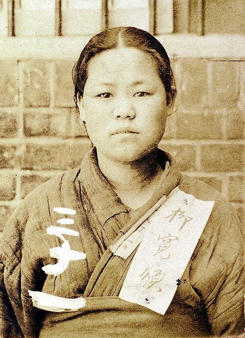
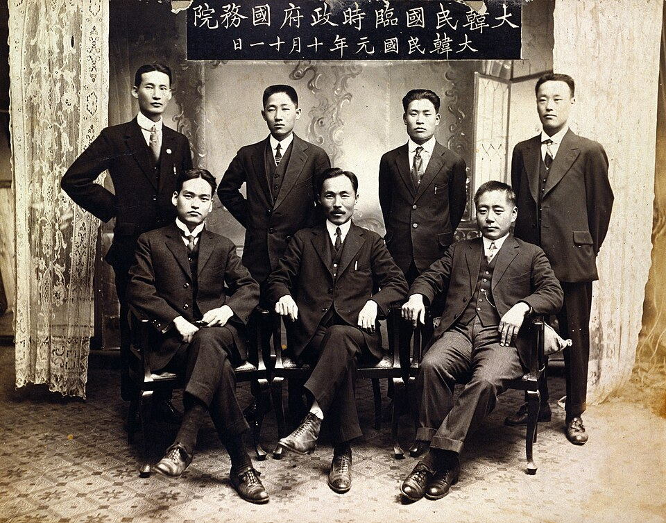
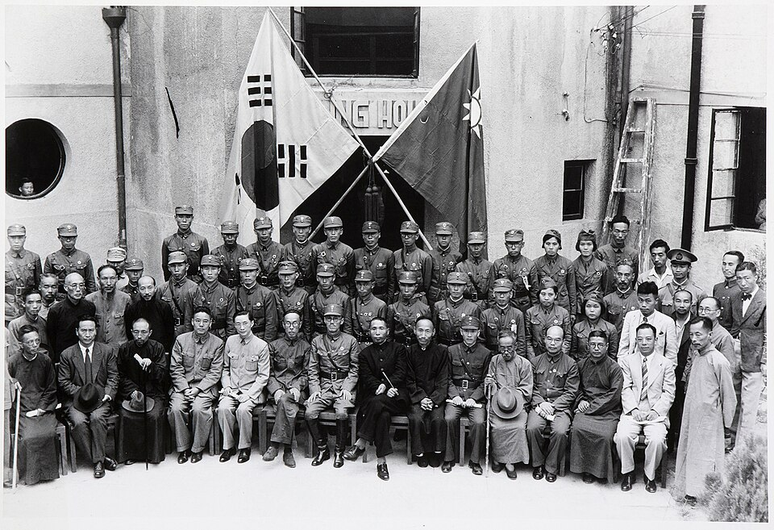

| 시기 | 통치 방식 | 주요 내용 |
|---|---|---|
| 1910년대 | 총독은 현역 만 임명, 제(즉결처분권, 태형은 한국인에게만 적용), 언론·출판·집회·결사의 자유 박탈 | |
| 1920년대 | 이른바 '' | 보통경찰제로 전환(그러나 경찰 수·예산은 오히려 증가), 조선일보·동아일보 창간 허용(검열은 지속), (1925) 제정 |
| 1930~40년대 | 암송, 신사참배·궁성요배 강요, , 조선어·조선사 교육 금지, 신문 강제 폐간(1940) |

| 시기 | 사건 · 체제 | 내용 |
|---|---|---|
| 1923 | (신채호, 새 정부 수립) vs (안창호, 임시정부 유지·개혁) 대립 → 결렬, 세력 이탈 | |
| 1925 | 이승만 탄핵 | 박은식 2대 대통령 → 국무령제(의원내각제)로 개헌 |
| 1927 | 집단지도체제 | 국무위원제 채택 |
| 1940 | 김구 주석 체제, 선포( — 조소앙) |

